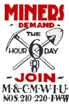

Mexico: Nationwide wildcat miners’ strike
Submitted on Tue, 03/07/2006 - 5:51pm
More than a quarter of a million miners and steelworkers walked off the job between March 1 - 3 in wildcat strikes at 70 companies in at least eight states from central to northern Mexico virtually paralysing the mining industry. While the strike has ended, there are reasons to believe that this could be the first act in an unfolding drama that could challenge Mexican employers, the corrupt “official” unions, and the conservative Mexican government. Stay in your seats, the play has only begun.
By Dan La Botz
The strike resulted from an attempt by the government to remove the Mexican Miners Union’s top officer, general secretary Napleón Gómez Urrutia, and replace him with Elías Morales Hernández, a union dissident who is reportedly backed by the Grupo Mexico mining company. The coup d’état in their union led miners to strike insisting that the government recognise Gómez Urrutia. In many mining towns and cities they also marched and rallied demanding not only the restitution of their leader but also safer conditions. The wildcat strike erupted little more than a week after a mining accident on February 19 in San Juan de las Sabinas that left 65 dead.
The miners’ wildcat strike represents one of the largest industrial actions in recent Mexican history, an event with few precedents since the workers insurgency (la insurgencia obrera) late 1960s and early 1970s (See our people’s history of Mexico - http://libcom.org/history/articles/mexico-peoples-history-1867-2000.php - for more information). While the strike has ended, at least temporarily, it has shaken the mining industry, the labour establishment and the government, and it could re-ignite and possibly spread to other sectors of the labour movement, possibly shaking the entire society.
THE UNION ISSUE: The Pasta de Conchos Accident
The strike by members of the National Union of Mining and Metallurgical Workers of Mexico (SNTMMRM) resulted from both labour union issues and political causes. The explosion and cave in at the Pasta de Conchos mine in San Juan de Las Sabinas, Coahuila in northern Mexico trapped 65 miners, all of whom are presumed dead (their bodies have not yet been recovered). The Miners Union leader, Gómez Urrutia, blamed the employer, Grupo Mexico, calling the deaths “industrial homicide.”
The Pasta de Conchos cave-in set off a storm. Throughout Mexico politicians, academics, intellectuals, and ordinary people criticised the mining company. The Grupo Mexico stock fell. Copper and other commodity prices rose. The Mexican Catholic Bishops Conference criticised the employer’s negligence and called for an international investigation, expressing their lack of confidence in the Mexican government.
While miners throughout the country mourned the death of their brothers and complained of health and safety conditions in their own mines, there was no official or wildcat strike in the immediate aftermath of the accident.
THE POLITICAL ISSUE: The Ousting of Gómez Urrutia
Then, on February 28 the Mexican Secretary of Labour announced that Gómez Urrutia was not actually the head of the union, but that the real general secretary was Elías Morales Hernández. The government’s action was based on part of Mexican labour law known as “taking note” (toma de nota), a process by which the government recognises the legally elected officers of labour unions. Six years earlier Morales Hernández had appealed to the Secretary of Labour, arguing that he had actually been elected and should be the new head of the union. The government had rejected the appeal by Morales Hernández and in 2002 Secretary of Labour Carlos Abascal Carranza recognised Gómez Urrutia as the general secretary.
Why had the Mexican government suddenly opted to overturn its own earlier decision, recognise the dissident, and bring him out of retirement to assume leadership of the Miners Union? The answer has partly to do with the Miners Union and the recent accident, but just as much to do with the Congress of Labour (CT), the umbrella organisation that brings together most of the largest Mexican labour federations and industrial unions.
THE OFFICIAL LABOUR MOVEMENT IN CRISIS
In mid-February 2006 Miners Union leader Gómez Urrutia joined together with Isaías González, head of the Revolutionary Confederation of Workers and Peasants (CROC), to challenge the election of Victor Flores Morales, head of the Mexican Railroad Workers Union (STFRM), for control of the Congress of Labour. Gómez Urrutia was trying to position himself to become the top leader of the numerically most important Mexican labour organisation.
His ambitions troubled many. The Congress of Labour (CT), which brings together most of the “official” unions of Mexico, historically formed part of the Institutional Revolutionary Party (PRI), the ruling party of Mexico. The CT had historically backed the PRI’s candidates, supported the PRI’s policies, and served in the Mexican Congress as PRI senators and congressmen. More recently the CT had worked out a modus viviendi with Mexican president Vicente Fox, collabourating with his National Action Party (PAN). Napoleón Gómez Urrutia’s attempt to take over the CT, not only challenged Railroad Workers Union leader Victor Florez, it all worried the PRI and PAN.
RIVAL LEADERS
Victor Flores had been the ideal labour union leader of both PRI and PAN governments. He had worked closely with the government to carry out the privatisation of the Mexican railroads, leading to their sale to the Union Pacific and the Kansas City railroads. When rank-and-file railroad workers had protested, Victor Flores had cooperated with the government to have them fired—easy enough with some 100,000 railroad workers losing their jobs in the privatisation—and if that did not work he had sent his thugs to beat them and threaten them with murder. While somewhat volatile—as a PRI Congressman Victor Flores had once tried to strangle another representative—he was loyal to the government’s program of neoliberalism.
Napoleón Gómez Urrutia, on the other hand, seemed, from the government’s point of view, to be becoming a loose canon. In some ways this was odd. Gómez Urrutia had inherited the leadership of the mine from his father Napoleón Gómez Sada, and both had been typical charros, that is, union bureaucrats absolutely loyal to the PRI. They had turned out the vote for the party, collabourated with the employers, and had expelled union activists or leaders who opposed them or supported other political parties. Doing all of those things, they enjoyed the wealth, power and privilege to which their loyalty entitled them.
THE MINERS UNION IN STRUGGLE
Lately, however Gómez Urrutia had begun to challenge both the employers and the Congress of Labour/PRI leadership. In June 2005, Mexican miners joined their compañeros in Peru and the United States as more than 10,000 miners carried out a simultaneous protest against Grupo Mexico to demand that the company stop violating workers’ rights. The three unions accused Grupo Mexico of having a policy of repression, exploitation and unwanted involvement in union affairs. The protest was organised by the United Steel Workers of America (USWA) in the United States, the Federation of Metal Workers of Peru (FETIMAP), and the National union of Miners and Metal Workers (SNTMM) of Mexico. The international solidarity against the Mexican mining company was backed by the International Metalworkers Federation (IMF).
Then in September 2005, Mexican Miners and Metal Workers Union won a 46-day strike against two steel companies in Lázaro Cárdenas, Michoacan, in what may be one of the most important strikes in Mexico a decade. The local union and its 2,400 members succeeded in winning an 8 percent wage gain, 34 percent in new benefits, and a 7,250 peso one-time only bonus.
The Mexican Miners Union also indicated the ability to impact domestic politics. The Miners Union played a critical role in helping to lead the union bloc that opposed the Fox administration's labour law reform package. All of these actions threatened to upset the Mexican system of labour control by which the governmental labour authorities, the employers, and the “official” unions of the CT collude to channel and suppress workers. Then in February Gómez Urrutia made a bid to take over the CT, raising the prospect that he would lead labour struggles at a national level. Clearly at that point the Fox government must have already been looking for a way to get rid of him, then his remarks on Grupo Mexico’s “industrial homicide” made him persona non grata not only with the PRI but also with the employers.
THE WIDER CONTEXT
The struggle over the Congress of Labour and now over the Miners Union takes place at a crucial time: Mexico is in the midst of a national election campaign in which the conservative National Action Party’s candidate Felipe Calderón and the Institutional Revolutionary Party’s candidate Roberto Madrazo are being challenged by Andrés Manuel López Obrador of the center-left Party of the Democratic Revolution. López Obrador is running on a populist platform calling for putting “the poor first.” He is leading in the polls, and while international bankers and Mexican industrialists have said they can live with him, some fear the poor make take his slogan seriously.
At the same time, Subcomandante Marcos, leader of the Zapatista Army of National Liberation (EZLN), has left the Lacandon Forest in Chiapas to organise the “other campaign.” Marco’s “other campaign” is not an attempt to win election to the presidency, but rather an effort to organise the anti-capitalist forces of Mexico into a social movement with the power to overturn the government, call a constituent assembly, and write a new constitution for an egalitarian (and, though he hardly ever uses the word, a socialist) Mexico.
Marcos has recently gone out of his way to speak to Mexican workers and union members, blue collar labourers in private industry and white collar workers in government agencies, suggesting that they have to turn against their union leaders, the bosses, and the politicians. Most of the people Marcos speaks to—the poor, Indian communities, the unemployed—don’t have much economic leverage. Now the miners’ strike has shown what real economic power and potential political power could be.
THE DRAMA IS NOT YET OVER
The drama is not yet over. The Miners Union’s nationwide wildcat strike showed Mexican industrial workers’ taking centre stage for the first time in decades. Twice in the past there have been such strikes against the Mexican government: first in 1959 when the Mexican Railroad Workers union called a nationwide strike and again in 1976 when Electrical Workers and their allies in the Democratic Tendency carried out a national strike. Both of those strikes were crushed by the Mexican government—the PRI’s one-party-state—using the army, police and massive firings.
The Mexican government of that era, the era of the PRI, had the political and social power to carry out such military and police actions to put down a national labour walkout. The Fox government, as demonstrated by six-years of political failure, economic doldrums, and social disintegration, does not have the force to face down the labour movement should it act. A number of movements with different political leaderships and goals—López Obrador and the Party of the Democratic Revolution, Subcomandante Marcos and the Zapatistas, and Gómez Urrutia and the Miners Union—appear to be aligning in ways that could turn Mexico upside down.
THE NEXT ACT
Whether that happens depends on three things: 1) whether or not the government continues to make mistakes that inadvertently advantage and encourage its enemies; 2) whether or not the leaders of these movements prove willing to and capable of setting broader forces in motion; 3) whether or not workers, feeling and seeing their strength, move to build their own independent force. Stay in your seats, the curtain is rising…
Dan La Botz is the author of several books on Mexican labour unions, social movements and politics. He also edits Mexican Labour News and Analysis, a publication of the United Electrical Workers Union (UE) and the Authentic Labour Front (FAT), at: http://www.ueinternational.org/
This article was edited from www.anarkismo.net
HISTORY
Read the history of the first strike in North American history, by Mexican miners:
http://www.libcom.org/history/articles/real-del-monte-miners-strike-1766.php